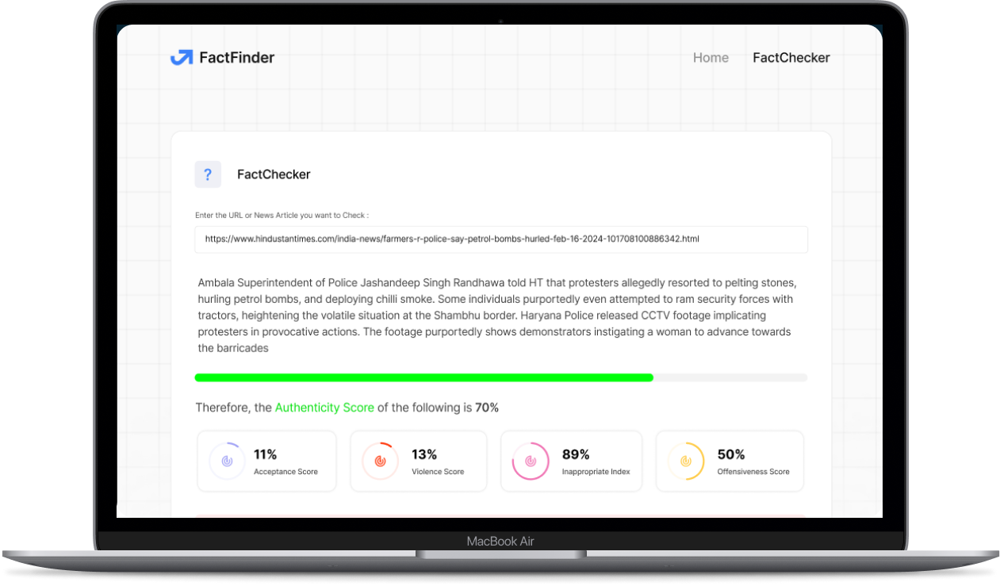

In a world where misinformation spreads like wildfire, discerning
fact from fiction has never been more crucial.

FactFinder is a cutting-edge solution designed to combat fake news. With high credibility, it helps users verify the authenticity of information. Its intuitive interface ensures ease of use for individuals, media outlets, and social media platforms seeking reliable news sources.